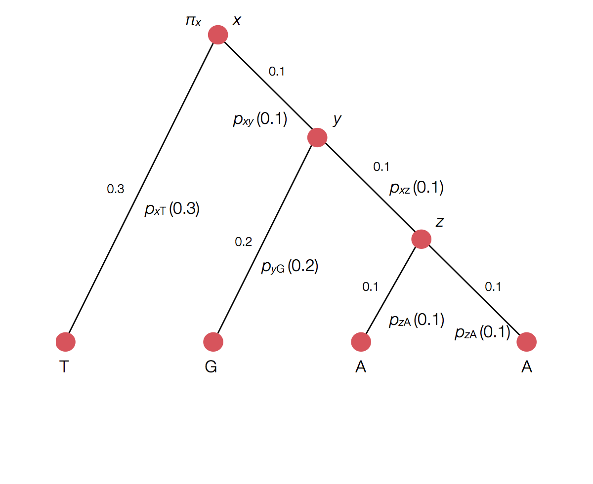
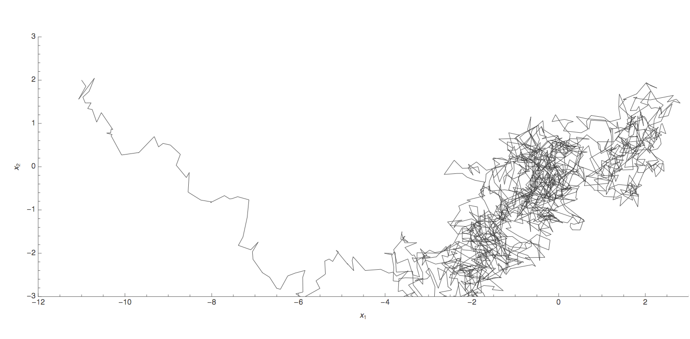

Phylogenetics
Phylogeny describes evolutionary relationships

Phylogeny is usually a hypothesis based on characteristics of sampled taxa

Phylogeny implies a series of mutational events leading to observed tip states

Parsimony is based on Occam's razor
Among competing hypotheses that predict equally well, the one with the fewest assumptions should be selected.
Parsimony suggests this topology requires 3 mutations at minimum

Parsimony suggests both topologies equally tenable

Exercise: which topology is more likely under parsimony?

Exercise: which topology is more likely under parsimony?

Exercise: which topology is more likely under parsimony?

Exercise: which topology is more likely under parsimony?

Exercise: which topology is more likely under parsimony?

Exercise: which topology is more likely under parsimony?

Exercise: which topology is more likely under parsimony?

Exercise: which topology is more likely under parsimony?

Example of how phylogeny structures site patterns
Inferring phylogenies with likelihood
Maximum likelihood (ML) inference
In ML, you have some set of data $D$ and a model for generating this data. This model has parameters $\theta$. The probability of observing data is $\mathrm{Pr}(D \, | \, \theta)$. The best parameter point estimate $\hat{\theta}$ is simply the value that maximizes $\mathrm{Pr}(D \, | \, \theta)$.
Maximum likelihood (ML) inference
For example, if we have data $D$ from a Bernoulli observation model representing $k$ successes in $n$ trials, then the probability of observing $k$ and $n$ given coin flip probability parameter $p$ is simply $$\mathrm{Pr}(k,n \, | \, p) = p^k \, (1-p)^{n-k}.$$
Maximum likelihood (ML) inference
For the Bernoulli model $\mathrm{Pr}(k,n \, | \, p) = p^k \, (1-p)^{n-k}$, we have $\hat{p} = \cfrac{k}{n}$. For example, with $k=8$ and $n=10$, $\hat{p}=0.8$ and the likelihood curve follows

Data likelihood
In phylogenetics, $D$ are the observed tip sequences and $\theta$ is the phylogenetic tree including topology and branch lengths.
Calculating the likelihood of a single topology

Transition probability for each branch
Rather than enumerating all possible internal states

Can use Felstenstein's pruning algorithm to speed up calculation

ML inference
Inference becomes a search for the tree that maximizes the likelihood of observing tip sequences. Lots of computation goes into this.
Bayesian phylogenetic inference
Bayesian inference
Generally, it's difficult to make probability statements using frequentist statistics. You cannot directly say that model 1 is twice as likely as model 2. People misuse p values in this sort of fashion all the time.
Bayes' rule
Bayes' rule forms the basis of Bayesian inference, it states: $$ \mathrm{Pr}(A \, | \, B) = \cfrac{ \mathrm{Pr}(B \, | \, A) \, \mathrm{Pr}(A) }{ \mathrm{Pr}(B) } $$
Bayes' rule exercise
For example, let's say we have an Ebola test that is 99% sensitive and 99% specific (meaning if someone has Ebola it will report true 99% of the time and if someone doesn't have Ebola it will report false 99% of the time). Let's further say that 0.1% of the population has Ebola. If we select a random individual and observe a positive test result, what is the probability that they actually have Ebola?
Bayes' rule exercise
If we select a random individual and observe a positive test result, what is the probability that they
actually have Ebola? I.e.
$\mathrm{Pr}(\mathrm{P} \, | \, \mathrm{E}) = 0.99$,
$\mathrm{Pr}(\mathrm{N} \, | \, \mathrm{E}) = 0.01$,
$\mathrm{Pr}(\mathrm{P} \, | \, \mathrm{NE}) = 0.01$,
$\mathrm{Pr}(\mathrm{N} \, | \, \mathrm{NE}) = 0.99$
and $\mathrm{Pr}(\mathrm{E}) = 0.001$.
In this case, what is $\mathrm{Pr}(\mathrm{E} \, | \, \mathrm{P})$?
Bayesian inference
Bayesian inference applies Bayes' rule in a likelihood context, so that $$ \mathrm{Pr}(\theta \, | \, D) = \cfrac{ \mathrm{Pr}(D \, | \, \theta) \, \mathrm{Pr}(\theta) }{ \mathrm{Pr}(D) }, $$ where $D$ is data and $\theta$ are parameters. $\mathrm{Pr}(D)$ is constant with respect to $\theta$, so that $ \mathrm{Pr}(\theta \, | \, D) \propto \mathrm{Pr}(D \, | \, \theta) \, \mathrm{Pr}(\theta)$. This relationship is often referred to as $ \mathrm{posterior} \propto \mathrm{likelihood} \times \mathrm{prior}$.
Bayesian inference for Bernoulli model
Following our previous Bernoulli example, we've observed $k$ successes in $n$ trials, and so the likelihood $\mathrm{Pr}(k,n \, | \, p) = p^k \, (1-p)^{n-k}$. We'll assume a flat prior $\mathrm{Pr}(p) = 1$. In this case, the marginal likelihood follows $$\mathrm{Pr}(k,n) = \int_0^1 \mathrm{Pr}(k,n \, | \, p) \, \mathrm{Pr}(p) \, dp = \cfrac{k! \, (n-k)!}{(n+1)!}.$$ And the full posterior follows $$\mathrm{Pr}(p \, | \, k,n) = \cfrac{(n+1)! \, p^k \, (1-p)^{n-k}}{k! \, (n-k)!}.$$
Probability statements
If $k=8$ and $n=10$, the mean posterior $\mathrm{E}[p] = 0.75$, while the 95% credible interval extends from $0.482$ to $0.896$, and the posterior distribution follows

Bayesian phylogenetic inference
Here, we are interested in the posterior distribution $\mathrm{Pr}(\tau, \mu \, | \, D)$, where $D$ represents sequence data, $\tau$ represents the tree topology and $\mu$ represents mutational parameters (like transition vs tranversion rate). In this case, $$ \mathrm{Pr}(\tau, \mu \, | \, D) \propto \mathrm{Pr}(D \, | \, \tau, \mu) \, \mathrm{Pr}(\tau) \, \mathrm{Pr}(\mu). $$
Bayesian coalescent inference
In the case of the coalescent model, we are interested in coalescent rate parameter like $\lambda$. Here, we use $\lambda$ to give the likelihood of observing a particular tree topology $\mathrm{Pr}(\tau \, | \, \lambda)$. This probability is the likelihood of observing the coalescent intervals seen in the tree.
Bayesian coalescent inference
Thus, the full model becomes $$ \mathrm{Pr}(\tau, \mu, \lambda \, | \, D) \propto \mathrm{Pr}(D \, | \, \tau, \mu) \, \mathrm{Pr}(\tau \, | \, \lambda) \, \mathrm{Pr}(\lambda) \, \mathrm{Pr}(\mu). $$ Bayesian approaches work well to build these sorts of nested models.
BEAST: Bayesian Evolutionary Analysis by Sampling Trees
Markov chain Monte Carlo (MCMC)
Markov chain Monte Carlo (MCMC)